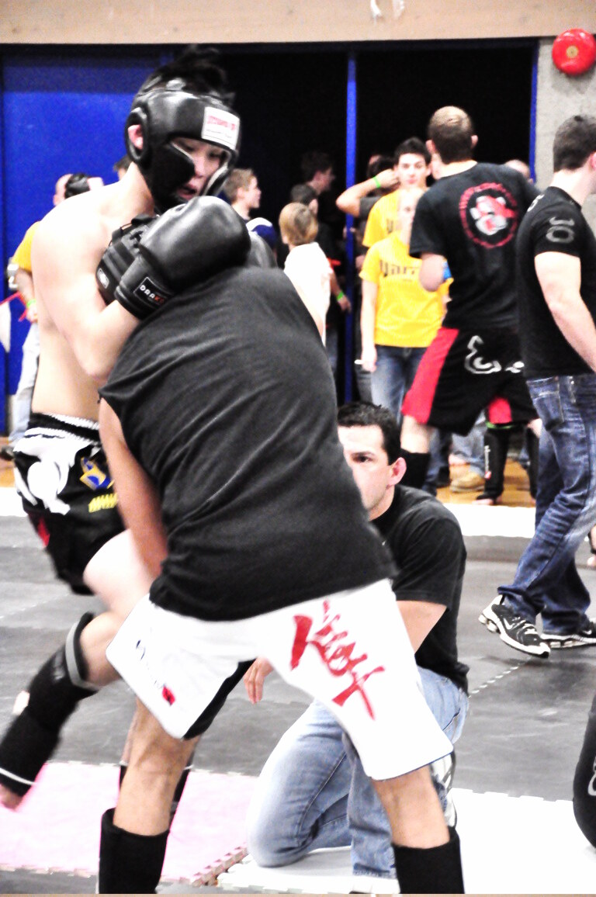

Muay Thai · Knee
Clinch Knee
Clinch knees are knee strikes thrown while controlling the opponent in the Thai clinch—plum posture feeding repeated body and head knees.
What Is Clinch Knee?
Clinch knee means knees while in Thai Clinch (Plum)/Double Collar Tie. It is how Muay Thai turns control into damage and scores.
Parent pages are clinch; sibling Straight Knee covers freer space.
Clinch knees are how plum control becomes visible scoring under many stadium eyes.
Martial Index files Clinch Knee under Muay Thai so searchers get definition, mechanics, and live batch links—not a thin glossary stub.
Read this beside the Eight Limbs map when you need the full weapon system; keep the focus on how Clinch Knee behaves in stance, range, and exchanges.
How Clinch Knee Works
Control head, break posture, drive knee into body/head, keep balance, turn when stuffed.
Alternate sides and mix pulls so they cannot shell one line.
If you only hold without knees, judges and coaches will notice.
Pull the head into the knee rather than only lifting the knee into a tall posture.
Mechanically, successful clinch knee work is usually a chain: stance integrity → timing → impact or control → recovery to Muay Thai Stance with hands alive.
If Range is wrong, even perfect form fails—too far and you claw air; too close and you collide into elbows or clinch threats you did not plan.
Pair offense with the defensive layer this tool implies: kicks need Kick Check awareness; pocket strikes need Long Guard or tight covers; clinch tools need posture.

Stadium vs Gym / Rules Notes
Under traditional stadium Muay Thai, clinch knee lives inside a full Eight Limbs rule set—elbows, knees, and clinch time change how often you invest in this tool.
Amateur cards, kickboxing crossovers, and some promotions restrict elbows or clinch duration. Gym culture may still drill clinch knee daily; fight night may shrink the toolkit.
Confirm the bout agreement before importing stadium frequency into restricted rules or MMA, where wrestling reframes clinch incentives.
Scoring emphasis varies. Some judges still reward hard kicks and balance; others read more like kickboxing. Let the card’s eyes shape volume.
What Does It Look Like in Practice?
Lock plum, three body knees, turn.
They underhook; re-pummel and knee.
Break, elbow, re-clinch, knee.
Fight picture: clinch knee appears when Range and Timing say so, then yields to the next limb in the Eight Limbs chain.
Gym test: can you apply clinch knee after a Jab feint (or a teep feint) and still recover your guard? If not, connect it to combinations instead of isolating forever.
Types / Variations
Body knees
Primary workhorse.
Drill this variation with movement—step in, step out, and reset—so it survives sparring pressure, not only pad stations.
Head knees
When posture collapses deeply.
Drill this variation with movement—step in, step out, and reset—so it survives sparring pressure, not only pad stations.
Curved/side knees
Around elbows/frames.
Drill this variation with movement—step in, step out, and reset—so it survives sparring pressure, not only pad stations.
Knee to dump chains
Off-balance after knees per rules.
Drill this variation with movement—step in, step out, and reset—so it survives sparring pressure, not only pad stations.
Common Mistakes
- Hugging without knees.
- Hips far.
- Head on centerline eating elbows.
- Predictable rhythm.
- Finger interlacing while kneeing.
- Treating clinch knee as a highlight instead of a range-and-timing skill.
- Skipping recovery—landing then posing with hands down.
- Ignoring sibling tools that set or cover the technique.
Training Notes
Shadowbox clinch knee inside full rounds; return to Muay Thai Stance after every attempt.
Pads: technical → moving → forced follow-up (punch, kick, or clinch) so clinch knee connects to Eight Limbs.
Partner drills beat bag-only fluency; feed realistic rhythm so Timing is part of the skill.
Film sparring weekly and ask whether clinch knee appears in the right Range band.
Progress intensity with a coach—especially for elbows, flying knees, and catch-heavy games.
Study Notes
Coaches often describe clinch knee as “simple to show, hard to own.” The gap is usually not a missing secret—it is missing reps under stress, poor Range, or a stance that collapses when kicks and clinch enter the round.
When you compare gyms, you will see stylistic accents: some put clinch knee behind heavy boxing; others behind teeps and body kicks; stadium-oriented rooms may emphasize clinch delivery. The encyclopedia definition stays stable even when accents change.
Use internal links in this entry as a study path—move from pillars like Teep (Push Kick), Thai Clinch (Plum), and Muay Thai Stance into siblings, then return here after sparring to re-read mistakes with fresh context.
Safety note: encyclopedia pages are reference material, not live coaching. Train under qualified instructors, especially for elbows, knees, and catch-kick dumps where mistiming injures partners.
Keep vocabulary precise. Fighters overload words like “clinch,” “guard,” and “timing.” Martial Index’s Muay Thai entries keep clinch knee scoped so you are not dumped into unrelated BJJ articles that share casual language.
A practical weekly plan: two technical rounds focused on clinch knee, one situational sparring theme that forces it, and one film review asking where Timing failed.
If you compete, write a one-line rule note for clinch knee under your next card (elbows allowed? clinch time? scoring bias?) so training intensity matches the bout, not a generic Instagram Muay Thai.
Related reading inside this batch should feel like a cluster, not a random walk: return to Eight Limbs when you forget why a tool exists, and to Range when techniques “stop working” for mysterious reasons.
FAQ
Questions we hear on the mats, in forums, and under instructional videos—answered in Martial Index voice.
How many knees?
Quality and control over spam.
Head knees sparring?
Very careful/light.
Sweeps after?
Often trained; rules vary.
Vs wrestling clinch?
Different goals.
Tired clinch?
Posture first—survival.
The Bottom Line
Clinch to knee—control the head, keep hips close, and make every hold threaten a strike.